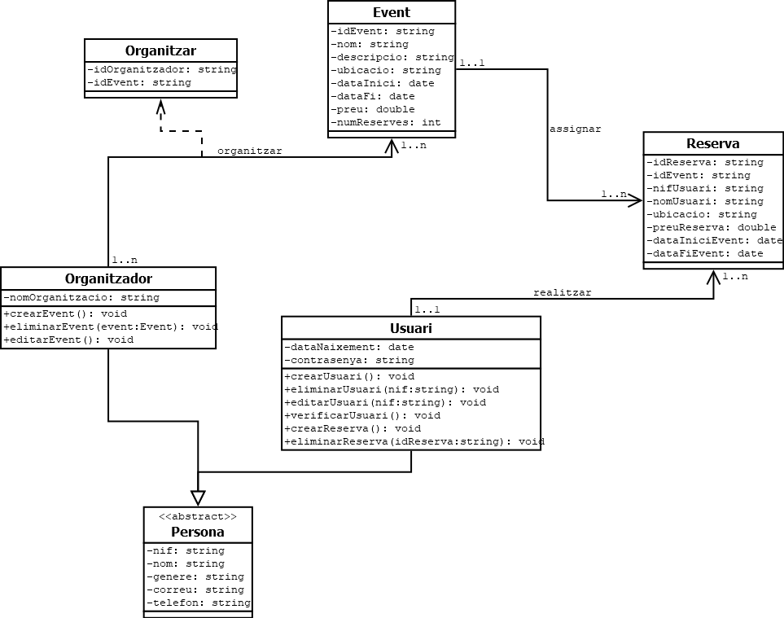
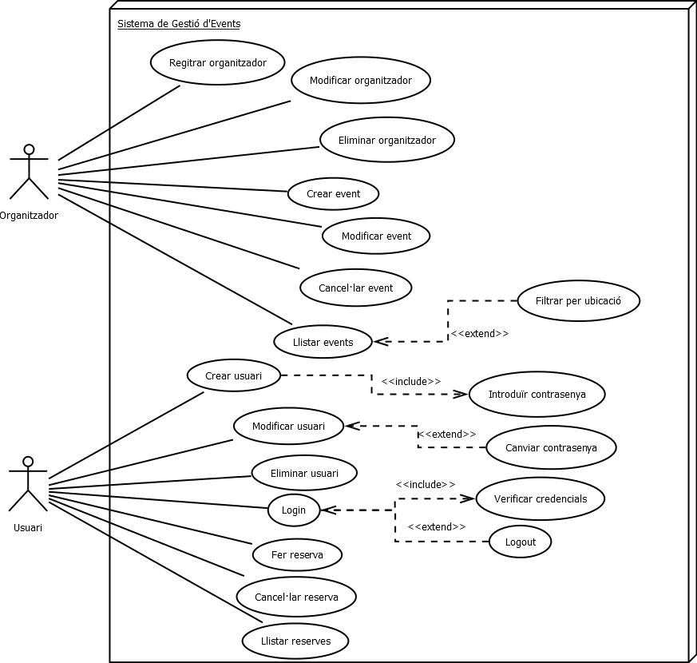

DIAGRAMA DE CLASES
Un diagrama de classes és una representació visual de les classes i les relacions entre elles en un programa.
Aquest tipus de diagrama és útil per a entendre l'estructura i l'organització del sistema, així com per a comunicar de manera efectiva el disseny de programari entre desenvolupadors i altres interessats.
DIAGRAMA DE CASOS D'ÚS
Un diagrama de casos d'ús és una representació visual dels diferents escenaris o interaccions entre els actors i el sistema en un programa.
Aquest tipus de diagrama és útil per a comprendre els requisits funcionals del sistema i per a comunicar de manera efectiva les funcionalitats del sistema entre els desenvolupadors i els usuaris.
